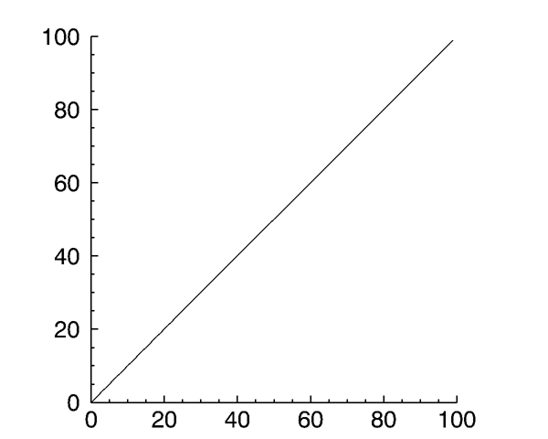
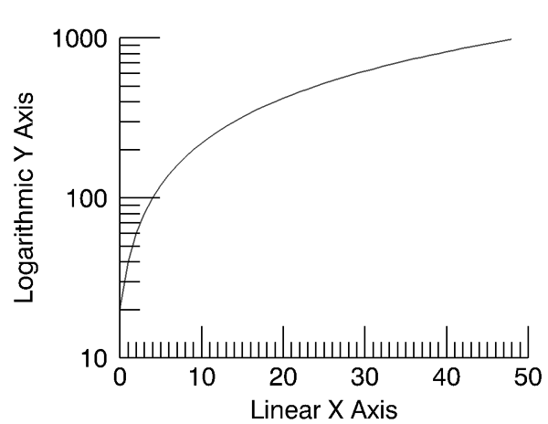
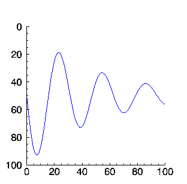

An axis object represents a single vector that may include a set of tick marks, tick labels, and a title.
An IDLgrAxis object is an atomic graphic object ; it is one of the basic drawable elements of the IDL Object Graphics system, and it is not a container for other objects.
See IDLgrAxis::Init .
Objects of this class have the following properties. See IDLgrAxis Properties for details on individual properties.
|
|
|
|
|
In addition, objects of this class inherit the properties of all superclasses of this class.
This class has the following methods:
In addition, this class inherits the methods of its superclasses (if any).
To create an axis object, specify an integer argument to the IDLgrAxis::Init method when calling OBJ_NEW. Specify 0 (zero) to create an x -axis object, 1 (one) to create a y -axis object, or 2 to create a z -axis object:
xaxis = OBJ_NEW('IDLgrAxis', 0)
yaxis = OBJ_NEW('IDLgrAxis', 1)
zaxis = OBJ_NEW('IDLgrAxis', 2)
The various keywords to the Init method allow you to control the number of major and minor ticks, the tick length and direction, the data range, and other attributes. For example, to create an x -axis object whose data range is between –5 and 5, with the tick marks below the axis line, use the following command:
xaxis = OBJ_NEW('IDLgrAxis', 0, RANGE=[-5.0, 5.0], TICKDIR=1)
To suppress minor tick marks:
xaxis->SetProperty, MINOR=0
Suppose you wish to create an X - Y plot of some data and wish to include both x - and y -axes.
Example Code:
The following example code is included in a procedure file named
obj_axis.
pro
, located in the
examples/doc/objects
subdirectory of the
IDL
distribution. Run the example procedure by entering
obj_axis
at the IDL command prompt or view the file in an IDL Editor window by entering
.EDIT obj_axis.pro
.
First, we create some data to plot, the plot object, and the axis objects:
data = FINDGEN(100)
myplot = OBJ_NEW('IDLgrPlot', data)
xaxis = OBJ_NEW('IDLgrAxis', 0)
yaxis = OBJ_NEW('IDLgrAxis', 1)
Next, we retrieve the data range from the plot object and set the x - and y -axis objects’ RANGE properly so that the axes will match the data when displayed:
myplot->GetProperty, XRANGE=xr, YRANGE=yr
xaxis->SetProperty, RANGE=xr
yaxis->SetProperty, RANGE=yr
By default, major tickmarks are 0.2 data units in length. Since the data range in this example is 0 to 99, we set the tick length to 2% of the data range instead:
xtl = 0.02 * (xr[1] - xr[0])
ytl = 0.02 * (yr[1] - yr[0])
xaxis->SetProperty, TICKLEN=xtl
yaxis->SetProperty, TICKLEN=ytl
Create model and view objects to contain the object tree, and a window object to display it:
mymodel = OBJ_NEW('IDLgrModel')
myview = OBJ_NEW('IDLgrView')
mywindow = OBJ_NEW('IDLgrWindow')
mymodel->Add, myplot
mymodel->Add, xaxis
mymodel->Add, yaxis
myview->Add, mymodel
Use the SET_VIEW procedure to add an appropriate viewplane rectangle to the view object.
SET_VIEW, myview, mywindow
Now, display the plot:
mywindow->Draw, myview
|
 |
Creating a plot of logarithmic data requires that you create a logarithmic axis as well. This example first creates a linear plot, then takes a logarithm of the same data and creates a log-linear plot.
Example Code:
The example code for logarithmic axes is included in a procedure file named
obj_logaxis.pro
, located in the
examples/doc/objects
subdirectory of the
IDL
distribution. Run the example procedure by entering
obj_logaxis
at the IDL command prompt or view the file in an IDL Editor window by entering
.EDIT obj_logaxis.pro
.
When you run this example, notice that you need to position your mouse cursor at the IDL command prompt and press Enter to step through the program and arrive at the following output.
|
 |
Example Code:
You can run this example by entering
EX_REVERSE_PLOT
at the IDL command line. You can view the source for this example,
ex_reverse_plot.
pro
, in the
examples/doc/objects
directory. Run the example procedure by entering
ex_reverse_plot
at the IDL command prompt or view the file in an IDL Editor window by entering
.EDIT ex_reverse_plot.pro
.
The following figure demonstrates how you can reverse the order of axis tick values using Object Graphics.
|
 |
|
5.0 |
Introduced |
|
5.6 |
Added CLIP_PLANES property |
|
6.1 |
Added ALPHA_CHANNEL property |
|
6.4 |
Added SHADER property |
| 8.0 | Added ANTIALIAS property |